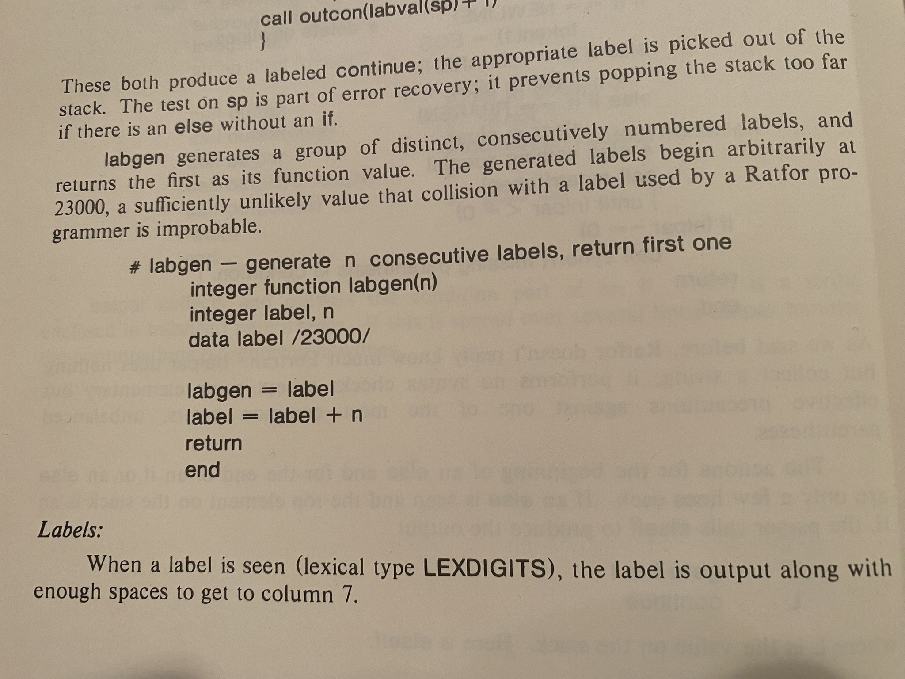

Another way of using the SWTOOLS VOS TCS revision system
Right, So, I've talked about how the LBL Software Tools Virtual Operating System organized its source files, using its archiver to collect all the source files, etc. for a program into an archive (sometimes with nested archives, because RECURSION IS NEAT) and then putting the archive under revision control using the TCS commands admin, delta, and get.
And that makes a lot of sense when what you are working on is one program or another closely related collection of information. But what if you are working on a collection of individual or nearly individual programs? Or what if your program is large enough that putting all its source in a single archive runs up against size limits in the SWTOOLS programs? Remember, they were meant to run on the 16 bit minicomputers of the day, as well as the 32 bit minicomputers that showed up soon after the SWTOOLS VOS was written, so there is a limit on the number of lines in a file that these can handle somewhere between 10,000 and 15,000 lines. What do you do then?
Well, today I wrote a set of commands to make it easy to work with a collection of source files, which each have a corresponding TCS history file in the subdirectory [.TCS]. I decided to have one DCL command procedure whose first parameter was the command to execute, so the common processing could be shared instead of duplicated between programs. But I had already written a program to compare a current source file inn the working directory with an older version in a TCS revision file. Hmm.
Anyway, I went on to write the tcs command as a front end
for the normal TCS commands. Here's an example from running
TCS HELP
$ tcs help usage: tcs [ help | -h | -help | -? ] Output this help message. tcs admin FILE Initialize TCS file [.TCS]FILE from FILE. tcs get [-oOUTFILE] [-h] [-rM.N] FILE Get a revision of FILE from TCS file [.TCS]FILE. -oOUTFILE writes the output to OUTFILE. If -o is not specifed the output goes to standard output. -h Output history information instead of a revision. -rM.N Output revision M.N. tcs delta FILE Add a new version to TCS file [.TCS]FILE from FILE. tcs outdated List all the source files that are newer than their corresponding TCS file in [.TCS] tcs uncovered [FILESPEC] [IGNOREDTYPES] List all the files in the current directory that do not have corresponding files in [.TCS]. If FILEPSEC is specified it should be a VMS wildcard that will be applied to the current directory for matching. If IGNOREDTYPES is specified it should be a single file type (without the ".") or a comma separated list of file types to be ignored. If one needs to specified IGNOREDTYPES but not FILESPEC just specify an empty string for FILESPEC.
And here is the current source code of TCS.SDCL:
!> TCS.SDCL -- TCS frontend. ############################################################################## ### ### tcs [ help | -h | -help | -? ] ### tcs admin FILE ### tcs get [-ooutfile] [-h] [-rM.N] FILE ### tcs delta FILE ### tcs outdated ### tcs uncovered [FILESPEC] [IGNOREDTYPES] ### ############################################################################## wso :== write sys$output wse :== write sys$error TRUE = 1 .eq. 1 FALSE = 1 .ne. 1 QUIET = %x10000000 months_jan = "01" months_feb = "02" months_mar = "03" months_apr = "04" months_may = "05" months_jun = "06" months_jul = "07" months_aug = "08" months_sep = "09" months_oct = "10" months_nov = "11" months_dec = "12" debugging = f$type (tcs_debugging) .nes. "" verbose = FALSE command = p1 if (command .eqs. "HELP" .or. command .eqs. "-H" .or. command .eqs. "-HELP" .or. command .eqs. "-?") { goto usage } if ((command .eqs. "") .or. .not. (command .eqs. "ADMIN" .or. command .eqs. "GET" .or. command .eqs. "DELTA" .or. command .eqs. "OUTDATED" .or. command .eqs. "UNCOVERED")) { wse "tcs: unrecognized TCS command: """, command, """" exit 2 } param_idx = 2 num_options = 0 outfile = "" while (f$extract (0, 1, p'param_idx') .eqs. "-") { ## Remember, DCL upcases everything! if (f$extract (0, 2, p'param_idx') .eqs. "-O") { outfile = f$extract (2, f$length (p'param_idx'), p'param_idx') } else { num_options = num_options + 1 options_'num_options' = p'param_idx' } param_idx = param_idx + 1 } file = p'param_idx' # Can be blank dirname = f$search ("TCS.DIR") if (dirname .eqs. "") { # No [.TCS] directory. create/dir [.TCS] } tcsfile = "[.tcs]" + file + "-TCS" # Not used by some commands. if (debugging) { wso "command: ", command, " file: ", file, " tcsfile: ", tcsfile wso "outfile: """, outfile, """" } if (command .eqs. "ADMIN") { goto do_admin } else if (command .eqs. "GET") { goto do_get } else if (command .eqs. "DELTA") { goto do_delta } else if (command .eqs. "OUTDATED") { goto do_outdated } else if (command .eqs. "UNCOVERED") { goto do_uncovered } wso "tcs: This should be impossible, so somebody screwed up. Exiting." exit 2 .or. QUIET do_admin: result = f$search (tcsfile) if (result .nes. "") { wse "tcs: TCS file ", tcsfile, " already exists, exiting." exit 2 } file = f$edit (file, "LOWERCASE") dclcmd = "admin ""-i''file'"" ''tcsfile'" wso "Executing ", dclcmd define/user sys$input sys$command 'dclcmd' exit do_get: if (outfile .eqs. "") { get 'options_1' 'options_2' 'options_3' 'options_4' 'tcsfile' } else { get 'options_1' 'options_2' 'options_3' 'options_4' 'tcsfile' >'outfile' } exit do_delta: result = f$search (tcsfile) if (result .eqs. "") { wse "tcs: TCS file ", tcsfile, " does not exist, exiting." exit 2 } define/user sys$input sys$command delta 'file' 'tcsfile' exit do_outdated: filespec = "[.tcs]*.*-tcs" repeat { tcsfile = f$search (filespec) if (tcsfile .eqs. "") break tcsrdt = f$file (tcsfile, "RDT") tcs_day = f$extract (00, 02, tcsrdt) tcs_monname = f$extract (03, 03, tcsrdt) tcs_year = f$extract (07, 04, tcsrdt) tcs_rest = f$extract (11, 12, tcsrdt) tcs_monnum = months_'tcs_monname' tcs_cmpdate = tcs_year + tcs_monnum + tcs_day + tcs_rest if (debugging .and. verbose) wso "tcs_cmpdate: ", tcs_cmpdate dirname = f$parse (tcsfile,,, "DIRECTORY") - ".TCS]" + "]" filename = f$parse (tcsfile,,, "NAME") filetype = f$parse (tcsfile,,, "TYPE") - "-TCS" srcfile = filename + filetype srcrdt = f$file (srcfile, "RDT") src_day = f$extract (00, 02, srcrdt) src_monname = f$extract (03, 03, srcrdt) src_year = f$extract (07, 04, srcrdt) src_rest = f$extract (11, 12, srcrdt) src_monnum = months_'src_monname' src_cmpdate = src_year + src_monnum + src_day + src_rest if (debugging .and. verbose) wso "src_cmpdate: ", src_cmpdate if (src_cmpdate .gts. tcs_cmpdate) wso srcfile, " is newer than ", tcsfile } exit do_uncovered: i = param_idx + 1 ignoredtypes = p'i' if (ignoredtypes .nes. "") ignoredtypes = "," + ignoredtypes if (debugging) wse "ignoredtypes: ", ignoredtypes ignoredtypes_len = f$length (ignoredtypes) if (file .eqs. "") filespec = "*.*" else filespec = file if (debugging) wse "filespec: ", filespec old_result = "" repeat { result = f$search (filespec, 1) if (debugging) wso "result: ", result # No more results if (result .eqs. "") break # No wildcard specified if (result .eqs. old_result) break old_result = result filename = f$parse (result,,, "NAME") filetype = f$parse (result,,, "TYPE") file = filename + filetype # Ignore directories if (filetype .eqs. ".DIR") next # Skip the ignored file types. skip = "," + (filetype - ".") if (debugging) wse "skip: ", skip, " ignoredtypes: ", ignoredtypes if (f$locate (skip, ignoredtypes) .ne. ignoredtypes_len) { if (debugging) wse "Skipping ", file next } tcsfile = "[.TCS]" + file + "-TCS" if (f$search (tcsfile) .eqs. "") wso file, " does not have a ", tcsfile } exit usage: copy sys$input sys$output //usage: //tcs [ help | -h | -help | -? ] // Output this help message. // //tcs admin FILE // // Initialize TCS file [.TCS]FILE from FILE. // //tcs get [-oOUTFILE] [-h] [-rM.N] FILE // // Get a revision of FILE from TCS file [.TCS]FILE. // // -oOUTFILE writes the output to OUTFILE. // If -o is not specifed the output goes to standard output. // // -h Output history information instead of a revision. // // -rM.N Output revision M.N. // //tcs delta FILE // // Add a new version to TCS file [.TCS]FILE from FILE. // //tcs outdated // // List all the source files that are newer than their corresponding // TCS file in [.TCS] // //tcs uncovered [FILESPEC] [IGNOREDTYPES] // // List all the files in the current directory that do not have // corresponding files in [.TCS]. // // If FILEPSEC is specified it should be a VMS wildcard that // will be applied to the current directory for matching. // // If IGNOREDTYPES is specified it should be a single file type // (without the ".") or a comma separated list of file types // to be ignored. // // If one needs to specified IGNOREDTYPES but not FILESPEC just // specify an empty string for FILESPEC. exit 2 .or. QUIET
I decided to leave my tcsdiff.sdcl program separate for the time being, since it was easy to convert to use with TCS files in [.TCS].
I found it amusing when I recently was working on some ratfor code soon after revising my SDCL (Structured DCL preprocessor) and I realized that the reason that the internal goto labels that I generate in SDCL start at 23000 because the original ratfor command started at 23000, which was carried over to the SWTOOLS VOS ratfor and the original sdcl written by Sohail Aslam of the University of Colorado at Colorado Springs, and from there to my version of SDCL.


Comments
Comments powered by Disqus